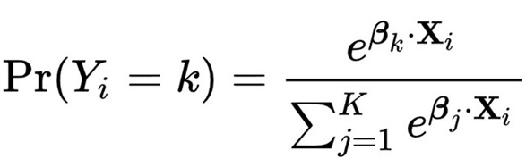

Choice Model Methods

Choice modelling is a core method in our research. We develop discrete and discrete-continuous econometric demand models of choice driven by the needs of our empirical work. We focus on behaviour mechanisms through econometric and Bayesian statistical methods, with some dabbling in algorithmic methods through collaborations with excellent research partners. We are interested in the general areas of behavioural decision-rule heterogeneity and collective decision processes. This research stream includes work on stated preference techiques to better capture behavioural dynamics and address hypothetical biases.
Related Publications
Modeling Mode and Departure Time Responses to Congestion Pricing: A Spatial and Behavioral Analysis Using Cross-Nested Logit Model
Mohammad Amin Ashena, Adam Weiss, Jason Hawkins, Lina Kattan
arXiv Preprint (2026)
Choice Model Methods
Infrastructure Finance
arXiv:2606.29756
Understanding traveller behaviour under congestion pricing: A survey-based decision tracking approach
Mohammad Amin Ashena, Adam Weiss, Jason Hawkins, Lina Kattan
Transportation Research Interdisciplinary Perspectives, 38, 102048–102048 (2026)
Choice Model Methods
Infrastructure Finance
doi:10.1016/j.trip.2026.102048
Why Do We Need Travel Behavior Theory in the Age of AI? Multiple Goal Pursuit as an Illustrative Theory
Jason Hawkins, Omid Armantalab
Research Square Preprint (2026)
Choice Model Methods
Vehicle Adoption
doi:10.21203/rs.3.rs-8811117/v1
Potential for electric vehicle adoption in Midwest US States: A stated preference and two-stage MRP study
Omid Armantalab, Riddhimoy Ghosh, Jason Hawkins
Journal of Choice Modelling, 59, 100597–100597 (2026)
Choice Model Methods
Vehicle Adoption
doi:10.1016/j.jocm.2026.100597
Who is more likely to buy an EV? A descriptive and integrated choice model analysis in the US Midwest
Omid Armantalab, Hania Afzal, Jason Hawkins
Transport Policy, 175, 103877–103877 (2025)
Choice Model Methods
Vehicle Adoption
doi:10.1016/j.tranpol.2025.103877
Investigation of factors affecting crash severity of rear-end crashes with high collision speeds in work zones: A South Carolina case study
Mahyar Madarshahian, Jason Hawkins, Nathan N. Huynh, Chowdhury Siddiqui
International Journal of Transportation Science and Technology, 17, 361–374 (2024)
Choice Model Methods
doi:10.1016/j.ijtst.2024.07.003
Perturbation of Residential Preferences by COVID-19 Shocks in the Greater Toronto Area
Saeed Shakib, Jason Hawkins, Khandker Nurul Habib
Transportation Research Record Journal of the Transportation Research Board, 2678(12), 702–719 (2024)
Choice Model Methods
doi:10.1177/03611981241239650
A framework for transportation and land use integration as a parallel constrained multiple discrete-continuous extreme value (PC-MDCEV) home production model
Jason Hawkins, Khandker Nurul Habib
Transportmetrica B Transport Dynamics, 12(1) (2024)
Choice Model Methods
Unravelling the relationship between ride-sourcing services and conventional modes in the city of Toronto: A stated preference study
Patrick Loa, Felita Ong, Jason Hawkins, Khandker Nurul Habib
Transport Policy, 141, 209–220 (2023)
Choice Model Methods
Shared Mobility
doi:10.1016/j.tranpol.2023.07.022
Establishment location choice model considering intra-firm interactions
Usman Ahmed, Jason Hawkins, Matthew J. Roorda
Journal of Transport Geography, 102, 103391–103391 (2022)
Choice Model Methods
doi:10.1016/j.jtrangeo.2022.103391
The taxi sharing practices: Matching, routing and pricing methods
Jianrong Qiu, Kai Huang, Jason Hawkins
Multimodal Transportation, 1(1), 100003–100003 (2022)
Choice Model Methods
Ecological Economics
Shared Mobility
doi:10.1016/j.multra.2022.100003
The evolution of choice set formation in dwelling and location with rising prices: A decadal panel analysis in the Greater Toronto Area
Jason Hawkins, Khandker Nurul Habib
Journal of Transport and Land Use, 14(1), 1227–1247 (2021)
Choice Model Methods
doi:10.5198/jtlu.2021.1854
Bayesian estimation of discrete choice models: a comparative analysis using effective sample size
Jason Hawkins, Khandker Nurul Habib
Transportation Letters, 14(10), 1091–1099 (2021)
Choice Model Methods
doi:10.1080/19427867.2021.1991554
Evaluating pedestrian perceptions of street design with a 3D stated preference survey
Dena Kasraian, Sneha Adhikari, David Kossowsky, Michael Luubert, G. Brent Hall, Jason Hawkins, Khandker Nurul Habib, Matthew J. Roorda
Environment and Planning B Urban Analytics and City Science, 48(7), 1787–1805 (2020)
Choice Model Methods
doi:10.1177/2399808320946050
Bus headway optimization with consumer surplus as a measure of societal benefit
Jason Hawkins, S. C. Wirasinghe, John Douglas Hunt
International Journal of Urban Sciences, 25(1), 86–103 (2020)
Choice Model Methods
doi:10.1080/12265934.2020.1730224
A joint model of place of residence (POR) and place of work (POW): Making use of Gibbs sampling technique to overcome arbitrary assumptions in contexts of data limitation
Hengyang Zhang, Jason Hawkins, Khandker Nurul Habib
Journal of Transport and Land Use, 12(1), 873–892 (2019)
Choice Model Methods
doi:10.5198/jtlu.2019.1624
Household-level dynamics in residential location choice modelling with a latent auction method
Jason Hawkins, Adam Weiss, Khandker Nurul Habib
Environment and Planning B Urban Analytics and City Science, 48(2), 314–330 (2019)
Choice Model Methods
doi:10.1177/2399808319871308
Report 4: Evaluating the Impacts of Private Transportation Companies on Travel Behaviour through a Stated Preference (SP) Survey
Patrick Loa, Jason Hawkins, Khandker Nurul Habib
TSpace (University of Toronto) (2019)
Choice Model Methods
Shared Mobility
No matching items